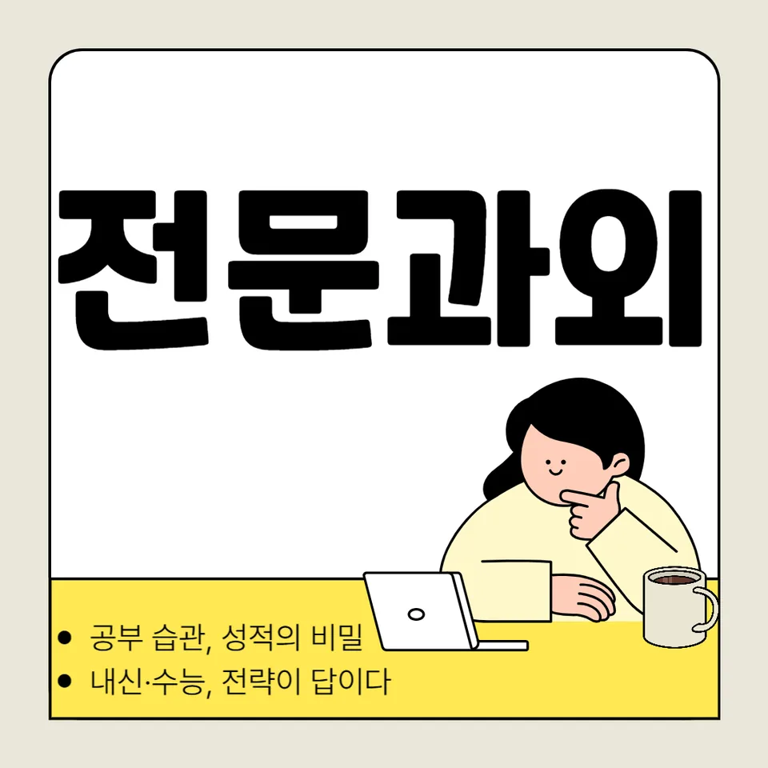

PageType : SUBJECT
URL : /경기도과외/부천시과외/오정구과외/오정동과외/오정동영어과외/
지역 교육환경이 영어 학습에 미치는 영향
오정동영어과외를 찾는 학생들은 대체로 학교 수업 외에 학습을 더 촘촘히 설계해야 한다고 느낍니다. 같은 단원이라도 오정동의 학습 분위기에서는 “수업에서 끝”보다 “집에서 다음 읽기 단서까지 연결”하는 흐름이 빨리 자리 잡는 편이라, 영어 학습은 듣기·읽기·어휘를 한 번에 붙잡는 방식으로 굳어지곤 합니다. 특히 방과후나 보충이 많을수록 독해나 문법을 따로 떼어 두는 경향이 줄고, 구문 이해를 바탕으로 문장 단위를 읽는 학생이 늘어납니다.
오정동영어과외 환경에서 자주 관찰되는 변화는 “처음에는 따라가다가 어느 순간부터는 스스로 속도를 조절하는 단계”로 넘어가는 모습입니다. 학교에서 다룬 표현을 다음 주 읽기에서 재등장시키고, 오답이 남아 있는 범위를 다음 듣기 자료로 연결하면서, 영어 실력은 부분 실력이 아니라 흐름으로 쌓입니다. 이때 학생의 공부습관은 단순히 시간을 늘리는 방식이 아니라, 그날 학습한 문장과 어휘가 다음 학습에서 다시 나타나도록 설계하는 데서 강해집니다.
학교마다 달라지는 영어 평가 방식
오정동영어과외를 시작하면 가장 먼저 확인하는 것이 학교별 영어 평가의 결입니다. 같은 학년이라도 내신 비중이 독해 중심인지, 수행평가가 말하기·쓰기·프로젝트 형태인지에 따라 준비의 무게중심이 달라집니다. 학교 시험은 교과서 문장 재구성에 가까운지, 낯선 지문에서 구문을 적용하는지에 따라 준비 전략이 바뀌고, 학생들은 자신이 무엇을 틀리는지보다 “어떤 조건에서 틀리는지”를 보게 됩니다.
오정동영어과외에서는 보통 수행평가가 포함되는 학교일수록, 문장 수준 이해가 흔들릴 때 점수가 같이 떨어지는 패턴을 먼저 잡습니다. 듣기에서 놓친 정보를 읽기에서 보완하고, 어휘가 부족하면 문장 해석 속도가 느려져 독해 단계에서 시간이 소모되는 식의 연결을 정리합니다. 오답을 단순히 지우는 방식이 아니라, 평가 방식에 맞게 복습의 형태를 바꾸면서 학생은 “학교가 요구하는 영어”를 감지합니다.
학생들이 영어에서 어려움을 느끼는 시점
대부분의 학생은 영어가 어렵다고 느끼는 시기가 반복됩니다. 오정동영어과외를 통해 확인되는 전형적인 구간은, 단순 암기 의존이 한계에 닿는 시점과 독해 지문이 길어지는 순간입니다. 초반에는 수업에서 들은 표현이 바로 해석으로 이어져 자신감이 생기지만, 어느 날부터는 문장 구조를 파악해야만 의미가 이어집니다. 이때 학생은 “영어를 읽는데도 내용이 잘 안 들어온다”는 감각을 경험하고, 문법 지식이 있더라도 구문 연결이 되지 않으면 해석이 끊깁니다.
오정동영어과외는 그 지점을 단절이 아닌 훈련 단계로 바꿉니다. 예를 들어 어휘가 늘어도 읽기 속도가 회복되지 않으면, 어휘 학습이 ‘누적’에만 머물러 있는지 점검합니다. 듣기와 읽기의 균형이 깨진 상태에서는 문장 리듬이 낯설어져 이해가 느려지고, 결국 오답이 반복됩니다. 이 흐름을 끊기 위해 복습을 짧게 자주 하되, 오답 항목이 다음 읽기·듣기에 다시 등장하도록 설계합니다.
학년 변화에 따른 영어 학습의 차이
학년이 올라갈수록 영어 부담은 수업 내용의 증가뿐 아니라 ‘처리 속도’와 ‘정확도’의 요구로 바뀝니다. 오정동영어과외에서 관찰되는 변화는, 저학년 때는 문장을 이해한 뒤 문제를 푸는 순서가 자연스럽지만, 고학년에서는 문제 조건을 먼저 읽고 문장 이해를 빠르게 연결해야 한다는 점입니다. 그래서 영어 학습은 같은 주제를 공부해도 접근 방식이 달라지고, 자기주도학습이 필요한 비중이 커집니다.
또 한 가지는 학습량이 늘수록 오답의 질이 바뀌는 현상입니다. 초반 오답은 단어·표현을 몰라서 생기지만, 학년이 오르면 문장 해석은 했는데 핵심 조건을 놓치는 실수, 즉 구문 이해가 아닌 ‘판단’에서 실수가 발생합니다. 오정동영어과외에서는 이런 오답을 분석할 때, 문법을 설명하는 방식보다 실제 문제에서 어떤 판단 흐름이 막혔는지에 초점을 둡니다. 그 결과 학생은 영어를 공부하는 감각이 “틀리면 다시 읽기”로 정착되고, 복습의 형태도 더 세밀해집니다.
내신과 수행평가를 함께 준비하는 방법
오정동영어과외에서 내신과 수행평가를 함께 준비할 때의 핵심은 학습 자료를 분리하지 않는 것입니다. 내신을 위해 문제 위주로만 움직이면 독해는 향상되어도 수행평가에서 요구하는 표현 사용이 약해질 수 있습니다. 반대로 수행평가 준비만 반복하면 시험 지문에서 시간 관리가 흔들립니다. 그래서 오정동영어과외에서는 같은 단원에서 배운 어휘와 구문을 듣기-읽기-쓰기(또는 말하기)로 순환시켜, 학교가 보는 평가 요소가 자연스럽게 이어지게 합니다.
시험 전에는 특히 시간 효율이 중요해집니다. 학생은 “모르는 걸 더 오래 보기”보다, 오답을 만든 조건을 찾아 다음 학습에서 재현하는 편이 빠릅니다. 오정동영어과외에서는 오답을 항목별로 나누고(어휘, 구문, 핵심정보 위치, 추론 단계 등), 복습에서 다시 같은 유형의 판단을 연습합니다. 이 과정에서 학부모는 아이가 무엇을 공부하는지뿐 아니라 왜 그 순서로 공부하는지까지 납득하게 됩니다.
꾸준한 학습 습관이 만드는 영어 실력
영어 실력은 단기간의 집중보다 “반복되는 작은 확인”으로 만들어집니다. 오정동영어과외를 유지하는 학생들의 공통점은 공부습관이 공부량보다 앞선다는 점입니다. 수업 직후에는 짧게 이해를 점검하고, 며칠 뒤에는 같은 문장을 다른 지문에서 다시 만나게 하며, 시험 기간에는 그동안 쌓인 오답을 중심으로 복습의 우선순위를 재정렬합니다. 이런 리듬이 생기면 독해와 듣기가 따로 놀지 않고, 어휘도 누적이 아니라 활용으로 이어집니다.
자기주도학습은 거창한 계획이 아니라 “다음에 할 일을 확정하는 능력”으로 나타납니다. 오정동영어과외에서 학생은 매주 학습 계획을 고정된 형식으로 기록하고, 학교에서 받은 피드백을 반영해 다음 읽기 방식까지 조정합니다. 그 결과 영어 학습에서 자신감이 생기는 과정이 확인됩니다. 잘 맞았던 날보다, 틀렸던 날을 다시 다루는 순간에 학생이 변화하기 때문입니다.
복습과 오답 관리가 중요한 이유
오답은 단순한 실패 기록이 아니라 다음 학습을 설계하는 데이터가 됩니다. 오정동영어과외에서 복습이 중요한 이유는 “언제, 어떤 조건에서, 어떤 사고가 멈췄는지”를 확인해야 영어가 자라기 때문입니다. 학생이 오답을 다시 풀지 못하면 같은 단원에서도 반복적으로 같은 실수를 만들고, 시간이 지날수록 회복이 늦어집니다. 반대로 오답을 유형화하면, 문법·어휘·구문 중 어떤 연결이 약한지 드러납니다.
복습은 오래 끌 필요가 없습니다. 대신 정기적으로 짧게, 그리고 다음 학습에서 재등장시키는 것이 효과적입니다. 오정동영어과외에서는 복습을 듣기로도 확장해, 읽기에서 놓친 핵심 표현이 듣기에서도 들리는지 확인합니다. 이런 균형이 잡히면 영어 학습은 감이 아니라 구조가 생기고, 시험 전에도 마음이 흔들리기보다 계획을 실행하는 힘이 남습니다.
영어 학습에서 확인해야 할 핵심 요소
오정동영어과외를 통해 점검해보면 좋을 요소는 몇 가지로 정리됩니다. 먼저 학교 범위와 연결된 학습 계획이 있는지, 그리고 독해·문법·어휘·듣기를 한 묶음으로 다루는지 확인해야 합니다. 학생이 “문장을 이해했는데 왜 문제를 틀렸는지”를 설명할 수 있어야 실력이 누적되고, 학부모도 불안 대신 관찰 가능한 지표를 갖게 됩니다.
또한 영어 학습은 점검이 반복될수록 안정됩니다. 수업이 끝난 뒤 바로 확인하고, 다음 주에 복습이 이어지고, 오답이 사라졌는지 확인하는 흐름이 자리 잡으면, 공부습관은 더 단단해집니다. 이 과정에서 자기주도학습은 자연스럽게 강화되고, 시험 기간에는 학습 패턴이 ‘추가 문제’에서 ‘정확한 복습’으로 이동합니다. 결국 영어는 오래 붙잡는 과목이 아니라, 계속 돌아보며 다듬는 과목이라는 감각이 생깁니다.
- 학교 시험 범위와 학습 계획이 연결되고 있는지 확인합니다.
- 독해·문법·어휘를 분리하지 않고 함께 학습하는 습관을 기릅니다.
- 오답의 원인을 분석하고 반복되는 실수를 줄이는 과정을 이어갑니다.
- 정기적인 복습으로 학습 내용을 장기 기억으로 연결합니다.
자주 묻는 질문
영어 학습은 언제부터 체계적으로 준비하는 것이 좋을까요?
학교에서 단원별 평가가 본격화되는 시점부터입니다. 오정동영어과외에서는 수업 직후 이해 점검과 주간 복습을 먼저 붙여서, 학생이 영어를 배우며 겪는 혼란을 “계획”으로 바꾸는 것을 우선으로 봅니다.
학교 내신과 모의고사는 어떻게 함께 준비해야 하나요?
내신에서 다루는 구문·어휘가 모의고사에서도 같은 방식으로 처리되는지 점검하는 식으로 연결합니다. 오정동영어과외에서는 내신 오답을 유형화해 다음 시험 대비 복습 자료로 재구성합니다.
영어 독해 실력은 어떤 과정으로 향상될 수 있나요?
어휘를 늘리는 것만으로는 부족할 때가 많습니다. 오정동영어과외에서는 문장 구조를 읽는 순서를 만들고, 그 구조를 통해 지문 핵심 정보와 추론 단계까지 이어지도록 연습합니다.
어휘와 문법은 어떤 순서로 학습하는 것이 효과적인가요?
어휘는 독해에서 바로 쓰이게 연결하고, 문법은 문제에서 요구하는 형태로 적용되는 경험을 쌓는 순서가 안정적입니다. 오정동영어과외에서는 구문 이해가 흔들릴 때 문법 학습이 왜 필요한지 자연스럽게 드러나도록 구성합니다.
공부 습관을 꾸준히 유지하려면 무엇이 중요할까요?
큰 의지보다 작은 루틴이 중요합니다. 오정동영어과외에서는 매주 학습 계획을 간단히 확정하고, 짧은 복습과 오답 확인을 반복해 자기주도학습이 습관으로 자리 잡게 돕습니다.
